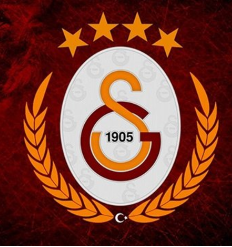

|  | Galatasaray Football Club |
History of Galatasaray S.K.
| After being influenced by the French Lycée model, the Galatasaray High School became much more of a modern school in September 1868. French was the main language for instructing, and many teachers were European. The students included members of all religious and ethnic communities from the Ottoman Empire. The school introduced sports (mainly gymnastics) as a new school subject and Monsieur Curel was the first gymnastics teacher. In 1899, a "football" first came to Galatasaray High School, but the pupils just kicked the ball at the Grand Cour of the school. In autumn 1902 Ali Sami Yen visited his uncle Suphi in Moda and on his way to him he saw Englishmen playing football at Moda field. He told his friends of this new sport, and on October 14, 1905 (which corresponds to "1 Teşrinievvel 1321[3]" according to the Islamic Rumi calendar (hence the common error of giving the date as "1 October 1905" by ignoring the 13 days of difference between the Rumi calendar and Gregorian calendar before the Ottoman calendar adjustment reforms of 1917–1918), during the History and Literature lesson of teacher Mehmet Ata Bey, they founded the club in the back rows of the classroom Literature 5B. |
| 1905 | The club is established. | 1909 | The club winning their first league title (Istanbul League). | 1946 | The club move to the Ali Sami Yen Stadium. |
| 1962 | First time national league champions. | 1963 | First Turkish Cup title. | 1963 | Winning their first Double (the Süper Lig and the Turkish Cup). |
| 1992 | Hakan Şükür is transferred from Bursaspor. | 1996 | Gheorghe Hagi is transferred from Barcelona. | 2000 | Mário Jardel is bought from Porto as the biggest transfer to a Turkish club ever. |
| 2000 | Winning the UEFA Cup and their first major European cup title. | 2000 | Winning the UEFA Super Cup. | 2011 | The club move to the Türk Telekom Arena. |